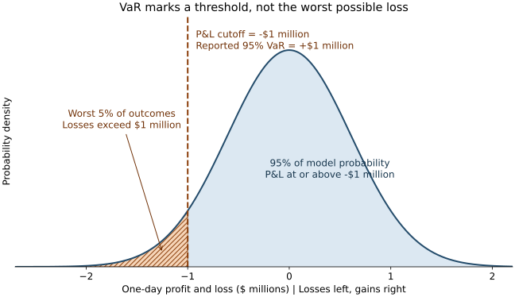

1. Wartość zagrożona (VaR)
Wyobraź sobie, że zarządzasz portfelem o wartości 10 milionów dolarów. Przed kolejnym dniem sesyjnym chcesz uzyskać praktyczną odpowiedź na pytanie:
Jak duża może być jutrzejsza strata, zanim znajdzie się w najgorszych 5% wyników naszego modelu?
Wartość zagrożona (Value at Risk, VaR) wyznacza tę granicę. Jeśli jednodniowa VaR portfela na poziomie ufności 95% wynosi 1 milion dolarów, model przypisuje 95-procentowe prawdopodobieństwo stracie nie większej niż 1 milion dolarów oraz 5-procentowe prawdopodobieństwo większej straty. Oszacowanie zależy od dzisiejszych pozycji, dostępnych informacji i założeń modelu 1.
VaR nie jest maksymalną możliwą stratą
Straty przekraczające VaR mogą być znacznie większe. Poziom ufności 95% nie oznacza, że portfel jest bezpieczny przez 95% czasu, że oszacowanie z 95-procentową pewnością jest poprawne ani że straty zatrzymują się na progu VaR.
1.1 Jak interpretować VaR
Każdy raport VaR powinien zawierać trzy elementy:
| Element | Przykład | Co oznacza |
|---|---|---|
| Kwota straty | 1 milion dolarów | Oszacowany próg straty, a nie limit straty |
| Horyzont | Jeden dzień sesyjny | Jak daleko w przyszłość sięga prognoza |
| Poziom ufności | 95% | Prawdopodobieństwo modelowe nieprzekroczenia progu |
Przydatnym sposobem wyobrażenia sobie VaR na poziomie ufności 95% jest przyjęcie 100 jednakowo prawdopodobnych scenariuszy modelowych. W przybliżeniu w 95 z nich straty nie przekroczą progu, a w około pięciu strata będzie większa. To wyjaśnienie prawdopodobieństwa, a nie obietnica, że w każdych 100 dniach sesyjnych wystąpi dokładnie pięć przekroczeń.
1.1.1 Próg przedstawiony na wykresie

Oś pozioma przedstawia zysk i stratę (P&L). Wartości ujemne po lewej stronie oznaczają straty, a dodatnie po prawej stronie zyski. Przerywana linia znajduje się przy \(-\$1\) mln, czyli przy progu P&L odpowiadającym raportowanej VaR równej \(+\$1\) mln. Kreskowany obszar po jej lewej stronie oznacza straty większe niż 1 milion dolarów. Prawdopodobieństwo reprezentuje pole pod krzywą, a nie wysokość krzywej w pojedynczym punkcie.
Ta gładka krzywa dzwonowa jest ilustracją, a nie twierdzeniem, że rzeczywisty P&L ma rozkład normalny. Wykorzystuje model normalny P&L o średniej zero i odchyleniu standardowym wynoszącym w przybliżeniu 607 957 dolarów, dobranym tak, aby piąty percentyl wynosił \(-\$1\) mln. Lewy ogon wykracza poza rysunek. Rzeczywiste portfele mogą mieć znacznie grubsze ogony.
Rysunek jest lokalnym plikiem SVG wygenerowanym za pomocą Matplotlib. MkDocs wyświetla go jak zwykły obraz, więc czytelnicy nie muszą pobierać biblioteki do tworzenia wykresów ani korzystać z JavaScriptu, aby go zobaczyć.
1.2 Co wynika z matematyki
Osoby, którym wystarczy interpretacja, mogą przejść do metod szacowania. W tej sekcji jawnie przedstawiono konwencje istotne przy implementacji.
Niech \(V_0\) oznacza dzisiejszą wartość portfela, a \(V_h\) jego wartość na koniec horyzontu \(h\). Dla portfela o stałych pozycjach i bez przepływów pieniężnych w trakcie okresu stratę definiujemy jako:
Dodatnie \(L_h\) oznacza stratę. Ujemne \(L_h\) oznacza zysk. W rozwiązaniu produkcyjnym należy określić, jak kupony, dywidendy, finansowanie, opłaty i zmiany pozycji wpływają na zysk i stratę, zamiast niejawnie mieszać definicje.
Na wykresie przyjęto przeciwną konwencję osi: zysk i strata to \(\Pi_h=V_h-V_0=-L_h\). Dla ciągłego rozkładu o jednoznacznym kwantylu próg P&L w lewym ogonie wynosi:
To samo ryzyko można więc przedstawić jako ujemny próg na wykresie P&L albo jako dodatni kwantyl strat. Raportujemy pieniężną wartość VaR, a nie jej ujemny próg P&L. W przypadku rozkładów dyskretnych przed zastosowaniem zmiany znaku należy określić konwencje dotyczące końców przedziału kwantyla, ponieważ masy prawdopodobieństwa mogą powodować, że tożsamości dla dolnego kwantyla nie zachowują się na granicy.
Oznaczmy poziom ufności przez \(c\), a prawdopodobieństwo ogona przez \(\alpha=1-c\). W całym tym artykule indeks dolny VaR oznacza poziom ufności. Zatem \(\operatorname{VaR}_{0.95}\) oznacza VaR na poziomie ufności 95%, a nie prawdopodobieństwo ogona równe 95%.
Jest to \(c\)-kwantyl strat, czyli najmniejszy próg, dla którego skumulowane prawdopodobieństwo osiąga poziom ufności. Wszystkie prawdopodobieństwa są prognozami warunkowymi względem informacji dostępnych w chwili sporządzania oszacowania.
Dla rozkładu ciągłego prawdopodobieństwo straty ściśle przekraczającej kwantyl wynosi \(1-c\). W rozkładzie, w którym prawdopodobieństwo skupia się przy określonych wartościach, to prawdopodobieństwo może być mniejsze. VaR może być również ujemna, jeśli nawet wybrany kwantyl oznacza zysk. Niektóre raporty przyjmują dla niej dolną granicę zero, ale jest to dodatkowa konwencja raportowania.
1.2.1 Wybór poziomu ufności i horyzontu
Do często stosowanych poziomów raportowania należą 95% i 99%. Dla tego samego rozkładu strat wyższy poziom ufności nie może dać niższej VaR. Przenosi też oszacowanie do obszaru rozkładu, dla którego danych jest mniej. Podwyższenie poziomu ufności nie zwiększa wiarygodności modelu.
Horyzont jednego dnia jest przydatny do codziennego monitorowania. Dłuższe horyzonty mogą lepiej odpowiadać pozycjom, których zamknięcie wymaga więcej czasu. Zawsze należy porównywać wartości odnoszące się do porównywalnych warunków: jednodniowa VaR na poziomie ufności 95% i dziesięciodniowa VaR na poziomie ufności 99% odpowiadają na różne pytania. Wymogi regulacyjne zależą też od właściwych ram i jurysdykcji, jak omówiono poniżej.
1.3 Trzy sposoby szacowania VaR
Wszystkie trzy metody opierają się na tym samym podstawowym pomyśle: tworzą wiarygodne scenariusze strat portfela i wskazują wybrany kwantyl. Różnią się sposobem generowania tych strat.
1.3.1 Symulacja historyczna: odtworzenie przeszłych zmian rynkowych
Symulacja historyczna stawia pytanie: Jaką stratę poniósłby dzisiejszy portfel, gdyby powtórzyły się przeszłe zmiany rynkowe?
- Zachowaj dzisiejsze pozycje.
- Zbierz historyczne zmiany odpowiednich cen, stóp procentowych, kursów walutowych i innych czynników ryzyka.
- Zastosuj łączne dzienne zmiany do dzisiejszych poziomów rynkowych i ponownie wyceń portfel.
- Posortuj uzyskane straty od najmniejszej do największej.
Odtworzenie łącznych zmian zachowuje zależności zaobserwowane w tych historycznych dniach. Ponowna wycena dzisiejszych pozycji jest istotna. Samo wykorzystanie historycznego zrealizowanego zysku i straty portfela może prowadzić do pomieszania różnych składów portfela i decyzji transakcyjnych 1.
Dla \(n\) scenariuszy o jednakowych wagach oznaczmy uporządkowane straty jako \(L_{(1)}\leq\cdots\leq L_{(n)}\). Przy empirycznej konwencji odwrotnej dystrybuanty:
Przy 250 scenariuszach i poziomie ufności 95% otrzymujemy \(k=\lceil0.95\times250\rceil=238\). Należy wybrać 238. najmniejszą stratę, która jest zarazem 13. największą stratą. Jeśli nie ma remisów, ściśle powyżej niej znajduje się dwanaście scenariuszy.
Dla stałej, dodatniej inwestycji \(V_0\), prostych stóp zwrotu \(r_i\) i braku przepływów pieniężnych \(L_i=-V_0r_i\). Jeśli stopy zwrotu są uporządkowane od najgorszej do najlepszej, równoważny wzór ma postać:
W przykładzie z 250 scenariuszami wykorzystuje się 13. najgorszą stopę zwrotu. Jeśli wynosi ona \(-2\%\), a \(V_0=\$10\) mln, pieniężna VaR wynosi 200 000 dolarów. Bez czynnika \(V_0\) wynik jest miarą opartą na stopie zwrotu, a nie kwotą w dolarach.
Konwencje kwantyla wpływają na wynik
Oprogramowanie może interpolować między obserwacjami zamiast wybierać pojedynczą statystykę pozycyjną. Należy jawnie podać przyjętą konwencję. Na przykład przy 100 różnych scenariuszach i poziomie ufności 95% powyższa reguła wybiera 95. najmniejszą stratę, czyli szóstą największą. Inna reguła zaokrąglania nie musi dać tego samego wyniku.
Symulacja historyczna nie wymaga rozkładu normalnego. Może odzwierciedlać skośność i ekstremalne straty obecne w wybranej próbie, ale nie może wygenerować kryzysów, których w tej próbie nie ma. Równe wagi obserwacji oznaczają też, że dawny spokojny dzień ma taką samą wagę jak niedawny dzień o dużej zmienności. Dłuższe szeregi dostarczają więcej obserwacji z ogona, ale mogą łączyć reżimy rynkowe, które nie przypominają już obecnych warunków.
1.3.2 Parametryczna VaR: zastosowanie modelu rozkładu
Prosty model parametryczny zakłada, że stopa zwrotu portfela ma w przybliżeniu rozkład normalny. Zamiast odtwarzać każdy dzień, podsumowuje ryzyko przez oczekiwaną stopę zwrotu, zmienność i korelacje.
Dla portfela liniowego niech \(\mathbf{w}\) oznacza wektor wartości pozycji podzielonych przez stałą, dodatnią wartość referencyjną \(V_0\). Niech \(\boldsymbol{\mu}\) i \(\boldsymbol{\Sigma}\) będą wektorem średnich i macierzą kowariancji prostych stóp zwrotu czynników ryzyka w wybranym horyzoncie. Wówczas:
Funkcja \(\Phi^{-1}\) jest funkcją kwantylową standardowego rozkładu normalnego. Przy poziomie ufności 95% \(z_{0.95}\approx1.645\). Zarówno \(\sigma_p\), jak i \(\mu_p\) są wyrażone jako stopy zwrotu, a pomnożenie przez \(V_0\) przelicza wynik na kwotę pieniężną. W przypadku instrumentów pochodnych model delta-normalny wykorzystuje zlinearyzowane ekspozycje na czynniki ryzyka, zamiast traktować wartości opcji jak liniowe inwestycje.
Przykład. Liniowy portfel o wartości 10 milionów dolarów ma dzienną zmienność 1% i założoną średnią stopę zwrotu równą zero. Jego jednodniowa VaR na poziomie ufności 95% wynosi w przybliżeniu:
Ta metoda jest szybka i przydatna jako punkt odniesienia. Jej słabościami są założenie o rozkładzie, oszacowane korelacje i ewentualne przybliżenie liniowe. Grube ogony mogą sprawiać, że model normalny zaniża ekstremalne straty. Opcje mogą reagować nieliniowo na zmiany cen i zmienności, dlatego przybliżenie uwzględniające wyłącznie deltę może pomijać istotne zyski lub straty.
1.3.2.1 Kiedy można skalować według pierwiastka z czasu?
Jeśli dzienne straty pieniężne są niezależnymi i identycznie rozłożonymi zmiennymi normalnymi o średniej \(\mu_L\) i odchyleniu standardowym \(\sigma_L\), ich suma z \(h\) dni spełnia:
Uproszczona zależność \(\operatorname{VaR}_{c,h}=\sqrt{h}\operatorname{VaR}_{c,1}\) wynika z tych założeń tylko przy średniej równej zero. Sama niezależność i skończona wariancja wyjaśniają, jak skaluje się wariancja, ale nie określają, jak skaluje się dowolny kwantyl ogonowy.
Stopy zwrotu składane, zmiany pozycji, skupianie się zmienności, niska płynność, skoki i nieliniowe wypłaty mogą unieważnić to uproszczenie. Gdy te efekty mają znaczenie, należy modelować bezpośrednio docelowy horyzont.
1.3.3 Symulacja Monte Carlo: generowanie scenariuszy modelowych
Symulacja Monte Carlo stawia pytanie: Jakie straty wynikają z dużej liczby hipotetycznych zmian rynkowych wygenerowanych przez wybrany model?
Należy określić sposób ewolucji czynników ryzyka i ich wzajemne zależności, zasymulować ich przyszłe wartości lub ścieżki, a następnie ponownie wycenić portfel w każdym scenariuszu. Uzyskane straty należy posortować i zastosować tę samą konwencję kwantyla co w symulacji historycznej 2.
Pełna ponowna wycena może wierniej uwzględniać krzywiznę opcji i wypłaty zależne od ścieżki niż przybliżenie liniowe. Symulacja nie jest jednak automatycznie dokładna. Jej wyniki nadal zależą od modelu czynników ryzyka, oszacowań parametrów, założeń o zależnościach i modeli wyceny.
Należy rozróżniać prawdopodobieństwa rzeczywiste, używane do prognozowania zmian rynkowych, od modeli wyceny neutralnych względem ryzyka, używanych do wyceny instrumentów pochodnych w każdym scenariuszu. Sam model wyceny nie dostarcza prognozy strat opartych na prawdopodobieństwach rzeczywistych.
Oszacowanie ogona wymaga też odpowiedniej liczby symulacji. Przy poziomie ufności 99% spośród 10 000 scenariuszy około 100 powinno znaleźć się powyżej prawdziwego kwantyla. Należy sprawdzać zbieżność i kwantyfikować niepewność symulacji, zamiast zakładać, że pozornie duża liczba scenariuszy wystarczy.
1.4 Czego VaR nie pokazuje
1.4.1 Dotkliwość strat przekraczających próg
Dwa portfele mogą mieć tę samą 99-procentową VaR wynoszącą 1 milion dolarów, nawet jeśli jeden z nich ma w ogonie straty nieznacznie przekraczające 1 milion dolarów, a drugi może stracić 20 milionów dolarów. VaR wskazuje początek ogona, a nie to, co dzieje się w jego obrębie.
Oczekiwana strata (Expected Shortfall, ES) uwzględnia ten brak, obliczając średnią z najgorszej części wyników o udziale \(1-c\). Definicja, która obejmuje również rozkłady dyskretne, ma postać:
Dla rozkładu ciągłego bez masy prawdopodobieństwa w progu jest to wartość oczekiwana straty pod warunkiem przekroczenia VaR. Przy scenariuszach dyskretnych lub remisach zwykła średnia strat ściśle przekraczających VaR może nie dać prawidłowo ważonej wartości ES. ES nadal zależy od modelu i powinna być uzupełniana testami warunków skrajnych.
1.4.2 Dywersyfikacja nie zawsze jest odzwierciedlana spójnie
Miara ryzyka jest podaddytywna, jeśli zmierzone ryzyko połączonych strat nie przewyższa sumy ryzyk zmierzonych osobno:
VaR nie zawsze spełnia tę nierówność. Prosty przykład pokazuje dlaczego:
- Inwestycja A przynosi stratę 100 dolarów z prawdopodobieństwem 4%, a poza tym nie przynosi straty.
- Inwestycja B ma taki sam rozkład strat, niezależnie od A.
- VaR na poziomie ufności 95% dla każdej inwestycji wynosi zero, ponieważ prawdopodobieństwo braku straty wynosi 96%.
- Łączne prawdopodobieństwo co najmniej jednej straty wynosi \(1-0.96^2=7.84\%\). Łączna VaR na poziomie ufności 95% wynosi zatem 100 dolarów, czyli więcej niż suma indywidualnych wartości VaR.
Nie oznacza to, że dywersyfikacja zawsze zawodzi ani że VaR zawsze narusza podaddytywność. Pokazuje to, w jaki sposób osobne progi kwantylowe mogą ukrywać rzadkie straty. ES jest podaddytywna dla strat całkowalnych, co jest jednym z powodów, dla których uzupełnia VaR 1.
1.4.3 Niepewność modelu i napięcia rynkowe
Modele historyczne, normalne i Monte Carlo mogą dawać różne wyniki dla tego samego portfela. Należy zbadać te różnice, zamiast wybierać najniższe oszacowanie.
Model dopasowany do spokojnego okresu może nie uwzględniać nagłych wzrostów zmienności, rozpadu korelacji ani kosztów zamykania pozycji na rynkach poddanych napięciom. Należy dodać scenariusze stresowe, analizę płynności, miary wrażliwości i limity koncentracji. Próg statystyczny nie jest kompletnym systemem zarządzania ryzykiem.
1.5 Sprawdzanie jakości prognoz
1.5.1 Liczenie przekroczeń bez wykorzystania przyszłych informacji
Przekroczenie występuje, gdy zrealizowana strata jest większa niż prognoza VaR sporządzona przed jej zaobserwowaniem. W przypadku dziennego testu wstecznego należy rejestrować:
Zapis \(t\mid t-1\) oznacza, że prognoza dla dnia \(t\) korzysta z informacji dostępnych do dnia \(t-1\). Nie należy ponownie kalibrować prognozy historycznej za pomocą danych, które pojawiły się później.
Dla poprawnie skalibrowanego modelu ciągłego o poziomie ufności 95% oczekiwana częstość przekroczeń wynosi 5%. W ciągu 250 dni oczekiwana liczba wynosi 12,5, ale zaobserwowana liczba będzie całkowita i zmienna. Jedno przekroczenie nie dowodzi błędu, a brak przekroczeń nie dowodzi poprawności.
Prognozy należy porównywać z zachowaniem spójnej definicji zysku i straty. VaR dla stałych pozycji najłatwiej sprawdzać względem hipotetycznego zysku i straty z tych pozycji. Rzeczywisty zysk i strata mogą też uwzględniać transakcje w trakcie dnia, opłaty i inne efekty. Regulacyjne testy wsteczne określają własne porównania.
1.5.2 Sprawdzanie częstości i skupiania się przekroczeń
Test niewarunkowego pokrycia Kupieca sprawdza, czy częstość przekroczeń jest zgodna z docelowym \(p=1-c\). Przy założeniu niezależnego modelu Bernoulliego dla przekroczeń:
Przy hipotezie zerowej i standardowych warunkach dużej próby statystyka ta ma w przybliżeniu rozkład \(\chi^2_1\). Dla \(x=0\) lub \(x=N\) wiarygodność należy obliczyć przez granicę, przyjmując w tym przypadku umownie \(0^0=1\). Małe próby z ogona mogą sprawić, że przybliżenie asymptotyczne będzie niewiarygodne, dlatego dokładny test dwumianowy jest użyteczną alternatywą przy tym samym założeniu niezależności.
Sama liczba nie pokazuje, czy przekroczenia występują seriami. Pięć przekroczeń rozłożonych na cały rok oznacza co innego niż pięć w jednym tygodniu. Test warunkowego pokrycia Christoffersena łączy kontrole pokrycia i niezależności 1.
Prognozy niepokrywające się w czasie są najłatwiejsze do interpretacji. Nakładające się wielodniowe straty obejmują wspólne obserwacje i mogą powodować zależności nawet wtedy, gdy bazowy model dzienny jest poprawny. Przejście testu wstecznego jest dowodem kalibracji, a nie dowodem poprawności wszystkich założeń modelu.
1.6 Kontekst regulacyjny
Należy odróżniać wcześniejsze reguły kapitałowe oparte na VaR od zrewidowanych ram dotyczących ryzyka rynkowego. W starszych zasadach Bazylejskich dotyczących modeli wewnętrznych stosowano dziesięciodniową VaR na poziomie ufności 99% wraz z VaR w warunkach skrajnych i innymi narzutami. Przedstawianie tego rozwiązania jako uniwersalnego, aktualnego wymogu Bazylejskiego jest mylące.
W zrewidowanych ramach Komitetu Bazylejskiego, nazywanych często Fundamentalnym Przeglądem Portfela Handlowego (Fundamental Review of the Trading Book, FRTB), miarą kapitałową w modelach wewnętrznych dla modelowalnych czynników ryzyka jest oczekiwana strata na poziomie ufności 97,5%, skalibrowana do warunków stresowych i skorygowana o określone horyzonty płynności. Bazowy horyzont wynosi dziesięć dni, a dla odpowiednich czynników ryzyka stosuje się dłuższe horyzonty płynności. Zob. oficjalne Ramy Bazylejskie, MAR33.
VaR nadal jest wykorzystywana do testowania wstecznego modeli. MAR32 określa porównania z jednodniową VaR, w tym testowanie wsteczne na poziomie całego banku przy poziomie ufności 99% oraz testy dla biur transakcyjnych przy poziomach ufności 97,5% i 99%.
Daty wdrożenia i wymogi prawne różnią się w zależności od jurysdykcji. Standard Bazylejski nie zastępuje właściwych przepisów lokalnych. Ryzyko operacyjne jest odrębną kategorią ryzyka, a regulacyjnego progu kapitałowego nie należy opisywać jako prostej reguły wymagającej, by każdy wynik kapitału na ryzyko rynkowe był równy wyższej z wartości oszacowanych modelem wewnętrznym i metodą standardową.
1.7 Wykorzystanie VaR przy podejmowaniu decyzji portfelowych
1.7.1 Jak zmiana pozycji wpływa na całość?
Przyrostowa VaR porównuje portfel z daną pozycją i bez niej:
Należy zachować spójność horyzontu, modelu i pozostałych pozycji. Wartość ujemna oznacza, że pozycja zmniejsza mierzoną VaR, tak jak może to robić zabezpieczenie. Nie oznacza to, że pozycja jest wolna od ryzyka.
Składowa VaR przypisuje część łącznej VaR na podstawie wrażliwości na wielkości pozycji \(a_i\):
Jeśli VaR jest różniczkowalna i jednorodna dodatniego stopnia pierwszego względem tych wielkości, twierdzenie Eulera daje \(\sum_i C_i=\operatorname{VaR}_c(\mathbf{a})\). Warunki te mają znaczenie. Empiryczne kwantyle mogą być niegładkie, a alokacje wyznaczane różnicami skończonymi nie muszą sumować się dokładnie. Składowa VaR nie jest tym samym co usunięcie całej pozycji, a skrótu CVaR najlepiej tu unikać, ponieważ jest również używany dla warunkowej VaR.
1.7.2 Praktyczna lista kontrolna raportowania
- Podaj portfel, moment wyceny, walutę, horyzont i poziom ufności.
- Określ model, okno danych, definicję straty i konwencję kwantyla.
- Przed obliczeniami zweryfikuj pozycje, dane rynkowe i dane wejściowe do wyceny.
- Raportuj VaR wraz z ES, stratami w scenariuszach stresowych, wrażliwościami i koncentracjami.
- Porównuj prognozy z limitami i badaj ich przekroczenia.
- Archiwizuj prognozy przed poznaniem wyników, a następnie przeprowadzaj testy wsteczne i analizuj przekroczenia.
- Informuj o niepewności i zmianach modelu, a nie tylko o pojedynczej liczbie.
1.8 Najważniejsze wnioski
VaR jest opartym na modelu progiem straty dla określonego horyzontu i poziomu ufności. Nie jest stratą w najgorszym przypadku ani gwarancją.
Dla czytelnika bez przygotowania technicznego najważniejsze pytania uzupełniające brzmią: Jakie założenia doprowadziły do tej wartości? Jak duże mogą być straty przekraczające ten próg? Jak sprawdzały się wcześniejsze prognozy?